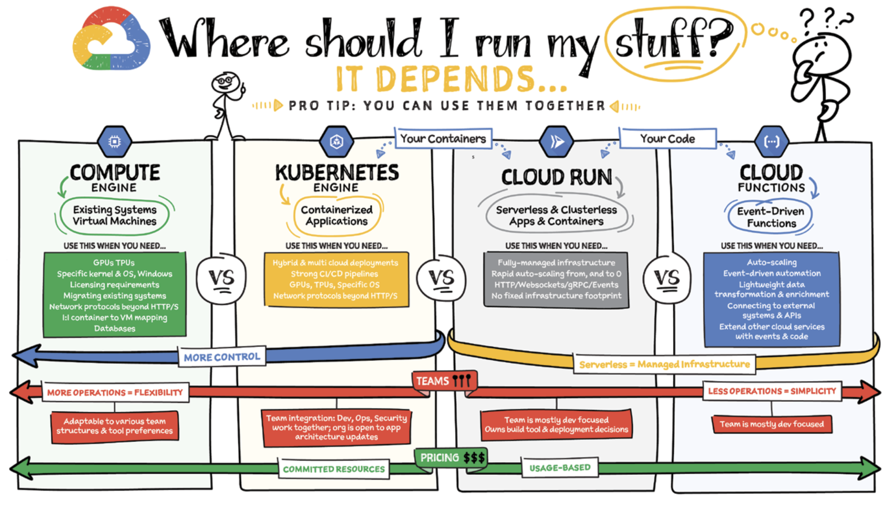

### Backing mobile “A distributed system is one in which the failure of a computer you didn't even know existed can render your own computer unusable.” - Leslie Lamport, 1987 Jukka Nikki, Senior Software Accident [Certified: Azure Fundamentals](https://www.credly.com/badges/b92ec6bf-1dbe-4f14-8b5a-de59e5fb61a1?source=linked_in_profile) [Certified: AWS Cloud Practitioner](https://www.credly.com/badges/fe59609d-0c26-4106-ab3f-046af8f07119?source=linked_in_profile)
tradeoff: give responsibility and power away to gain competences and savings. danger: usage costs are not fixed, advanced technology can create strong dependency to service provider, it's harder than you think.
#### Market grows rapidly ["In Q3 2022, Amazon, Microsoft, and Google own 66% share of the cloud infrastructure market.”](https://wire19.com/amazon-microsoft-and-google-cloud-infrastructure-market/)
#### "all my troubles.." ["So the biggest fallacy is that it’s going to be cheap...”](https://www.epam.com/from-taming-cloud-complexity-to-achieving-cloud-mastery?utm_source=pr-newswire&utm_medium=press-release&utm_campaign=cloud&utm_content=cloud-mastery-report)
#### [sovereign cloud](https://www.t-systems.com/de/en/cloud-services/managed-platform-services/sovereign-cloud/sovereign-cloud-powered-by-google-cloud) tradeoff: for data locality you can build your own full controlled on-premise cloud or use one of service provider. danger: you still need to grow your capabilities to understand cloud providers offerings and to manage and configure them.
### [sovereign checks](https://cloud.google.com/t-systems-sovereign-cloud) - Enforce data residency - Protect data from external access - Add local supervision of cloud controls
“Freedom is the will to be responsible for ourselves.” ― Friedrich Nietzsche in cloud it's all about shared responsibilities ..
<img alt="shared responsibility model aws" src="images/shared_responsibility_model_aws.jpg" width="70%"> ["differentiation of responsibility is commonly referred to as Security “of” the Cloud versus Security “in” the Cloud."](https://aws.amazon.com/compliance/shared-responsibility-model/)
["Technology and service providers that fail to adapt to the pace of cloud shift face increasing risk of becoming obsolete or, at best, being relegated to low-growth markets.”](https://www.gartner.com/en/newsroom/press-releases/2022-02-09-gartner-says-more-than-half-of-enterprise-it-spending)
["Cloud-native applications are typically broken down into multiple, self-contained services through the use of technologies and methodologies, namely DevOps, continuous delivery and continuous integration, containers, microservices, and declarative APIs.” ](https://cloud.google.com/learn/what-is-cloud-native)
["the organization should orient itself to the new realities and goals, and then drive the changes with relevant courses and employee growth."](https://www.epam.com/from-taming-cloud-complexity-to-achieving-cloud-mastery?utm_source=pr-newswire&utm_medium=press-release&utm_campaign=cloud&utm_content=cloud-mastery-report)
#### Cloud summary - Mobile apps need cloud services - Cloud is about shared responsibilities - There's a lot of benefits, but also a lot of risks - Sovereign cloud is MUST for regulated industries - Cloud market is dominated by few big players - Partnering with cloud providers is vital for success
#### Firebase for apps "[Firebase](https://firebase.google.com/) is an app development platform that helps you build and grow apps and games"
#### firebase services (some) | name | use case | | ------ | --------- | | Authentication | Give access to app | | Cloud Firestore | Store structured data (nosql) | | Cloud Storage | Store unstructured data | | Cloud Messaging | Send notifications | | Cloud Functions | Add serverside logic (FaaS) | | Test Lab | Automate real device tests | | Crashlytics | Analyze apps stability |
### Google cloud for enterprises - infrastructure, data analytics, machine learning - same security technology as Google uses - run your apps on open source solutions
#### Google cloud services (some of 100+) | name | use case | | ------ | --------- | | Cloud SQL | Store structured data (sql) | | Cloud Run | Add serverside logic (CaaS) | | Big Query | Big Data analytics | Additionally AI, ML, IoT, Security, Networking, Storage, Developer Tools, Management Tools, etc.. extends Firebase with additional power and flexibility, pricing may be more complex.

#### Decision criteria | driver | resources | management | | -------- | ----------- | ---------- | | predictability | dedicated | experts | | scalability | elastic | algorithms | Dedicated resources prevent budget overruns, but you need experts to manage your cluster. Elastic resources scale to meet usage peaks, heuristics and automation need to be configured properly.
#### Cloud Functions (FaaS) - use [Node.js, Python, Go, Java, .NET, Ruby, or PHP](https://cloud.google.com/functions/docs/concepts/execution-environment) - write function as "code snippet" - no concurrency support, no stateful functions - no cost when function is idle - price: events + compute + networking - use cases: react on pub/sub events, http requests, scheduled jobs, etc..
#### Cloud run (CaaS) - use any language and framework - implement service as [OCI container](https://opencontainers.org/) - concurrency and stateful logic possible - own domain supported - always free tier + pay when code runs - price: requests + cpu + memory + networking - use cases: web apps, apis, [microservices](https://cloud.google.com/blog/topics/developers-practitioners/microservices-architecture-google-cloud?hl=en), etc..
End of today's presentation. Thank you for your attention.